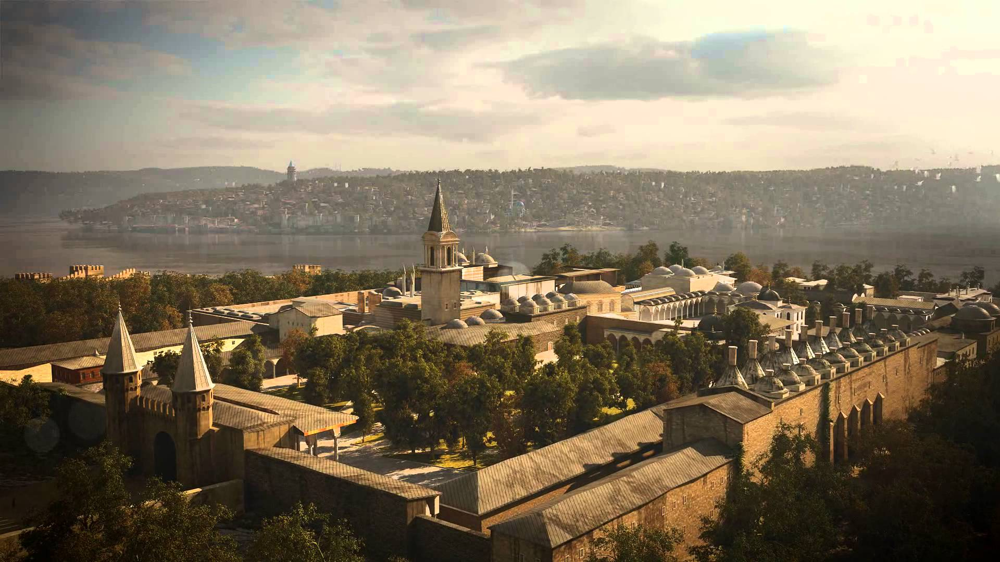
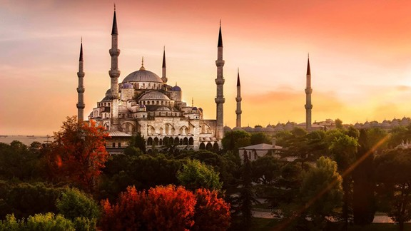
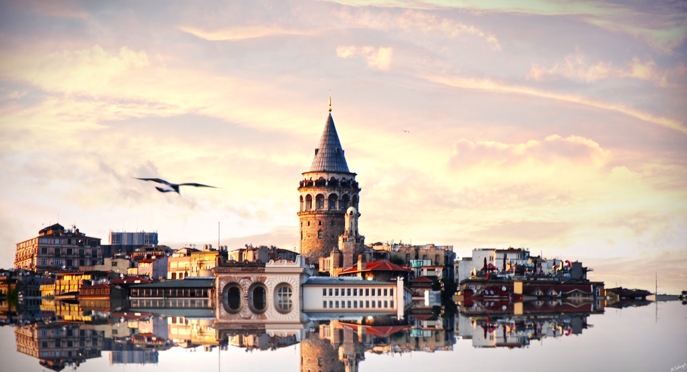
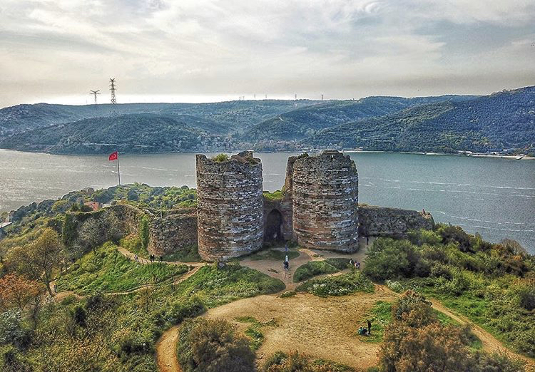
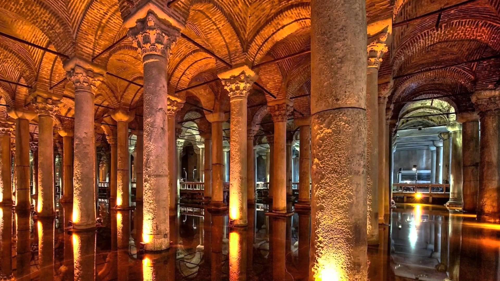
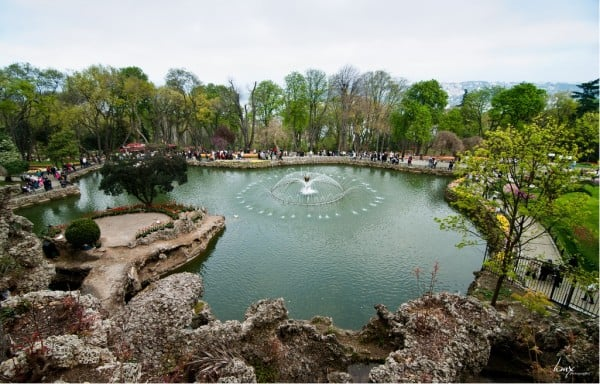

İstanbul
Gezi Rehberiniz
Gezi Rehberiniz
|  | TOPKAPI SARAYIFatih Sultan Mehmed’in 1453 yılında İstanbul’u fethetmesinden sonra 1460 yıllarında yapımına başlanan ve 1478 yılında tamamlanan Saray; Marmara Denizi, İstanbul Boğazı ve Haliç arasındaki tarihi İstanbul yarımadasının ucundaki Sarayburnu’nda bulunan Doğu Roma akropolü üzerindeki 700.000 metrekarelik bir alan üzerine kurulmuştur. Fatih Sultan Mehmed’den itibaren 31. padişah Sultan Abdülmecid’e kadar yaklaşık dört yüz yıl süreyle imparatorluğun idare, eğitim ve sanat merkezi olarak kullanılmış, aynı zamanda padişahın evi olmuştur. 19.yüzyılın ortalarında hanedanın Dolmabahçe Sarayı’na taşınması ile terk edilmiş olmasına rağmen önemini her zaman korumuştur. |
|  | SULTANAHMET CAMİİGezginlerin Tarihi Yarımada gezilecek yerler listelerinde görkemiyle kendisine yer bulan dini yapı, maneviyata verdiği önemle tanınan Sultan I. Ahmet’in emri doğrultusunda 1609-1616 yılları arasında inşa edilmiş. Sinan’dan sonra Osmanlı mimarisinin en önemli isimleri arasında sayılan Sedefkâr Mehmet Ağa’nın imzasını taşıyan yapı, devlet hazinesinden ayrılan ödenekle inşa edilmiş ilk selâtin (sultan) cami olma özelliğini taşıyor. Sultanahmet, At Meydanı’nın denize bakan kısmındaki geniş bir alanı kaplayan Ayşe Sultan Sarayı’nın yerine yapılmış. Kıble yönünde bulunan saray, 30.000 altın karşılığında satın alınmış. |
|  | GALATA KULESİAyasofya Müzesi, Topkapı Sarayı ve Sultanahmet Camii ile birlikte İstanbul’un en çok ilgi çeken yapılarının başında gelen Galata Kulesi, ilk olarak Bizans İmparatoru Anastasius Oilosuz tarafından inşa ettirilmiş. 528 yılında tamamlandığında ahşap yapıdan fener kulesi olarak istifade edilmiş. Ancak bölgede meydana gelen yangın felaketi yapıyı tamamen kullanılamaz hale getirmiş. Takvimler 1348 yılını gösterdiğinde ise Cenevizliler kuleyi yığma taş kullanarak tekrardan inşa etmişler. Uzun süre savunma için kullanılan ikonik yapı, kent 1453’te Osmanlı hâkimiyetine geçtikten sonra farklı amaçlarla hizmet vermeye başlamış. Galata, 16. yüzyılda tersane esirlerinin barınağıyken 18. yüzyılda gece yarısını haber vermesi için Mehteran Ocağı’na dönüştürülmüş. |
|  | YOROS KALESİİstanbul’un yeşile bakan yüzü ve Karadeniz’e açılan nokta Anadolu Kavağı’nın en tepe noktasında bulunan Yoros Kalesi, İstanbul’daki tek Bizans kalesidir. Genellikle Ceneviz Kalesi adıyla bilinen, kaynaklara göre aslında bir Bizans Kalesi olduğu kesin olan Yoros Kalesi, 13 ve 14. yüzyıllarda inşa edildi. Yoros Kalesi’nin bu isminin Hieron’dan (kutsal yer) geldiği söylense de Zeus’un sıfatı olan Ourius’dan (uygun rüzgarlar) alındığı da iddia edilmektedr. Yeşilin ve mavinin buluştuğu Anadolu Kavağı’nın tepesindeki kale, Bizans'ın gerilemesiyle birlikte bir dönem Cenevizlerin, ardından da İstanbul’un fethinden hemen önce 1391 yılında Türklerin hakimiyetine geçti. Türklerin eline geçmesinin ardından Yoros olarak adlandırılan kale, Karadeniz’e hakim bir arazide 500 metre uzunluğa sahip iki tepe üzerine konumlanmaktadır |
|  | YEREBATAN SARNICIYerebatan Sarnıcı İstanbul'da eskiden kalma büyük sarnıçtır. Yerebatan Sarayı adıyla anılan Bazilika Sarnıcı, İstanbul'da Ayasofya ile Cağaloğlu arasında bulunan büyük bir sarnıçtır. Günümüzde de içinde su bulunan bu büyük kapalı sarnıç, kentin su ihtiyacını karşılamak üzere ilkçağ'da yapılmıştı. İstanbul, tarihin bütün çağlarında güçlü devletlerce hep ele geçirilmek istendiği için Bizans imparatorları kentin birçok yerinde sarnıçlar yaptırarak kuşatma sırasında halkın su ihtiyacını karşılarlardı. Yerebatan Sarnıcı, VI. yüzyılda imparator İustinianos tarafından yaptırıldı. Sarnıcın suyu 19 km uzaklıktaki Belgrat ormanından Cebeciköy Kemeri ile getiriliyordu. Sarnıç, Osmanlı devrinde de uzun süre hizmet görmüştür. |
|  | EMİRGAN KORUSU/PARKIİsmi İranlı Emir Güne Han' dan geliyor. 1635' teki revan seferinde kalesini Sultan IV. Murad' a savaşmadan teslim etmiş. Sultan tarafından istanbul' a getirilmiş ve o zamana kadar Feridun Bey Bahçeleri diye anılan 500 bin metrekarelik yeri vermiş. XIX. Yüzyılda Sultan Abdülaziz koruyu Mısır Hıdivi İsmail Paşa' ya vermiş. Sahile bir yalı yaptırdıktan sonra koruya da sarı, beyaz ve pembe köşkler inşa edilmiş. |